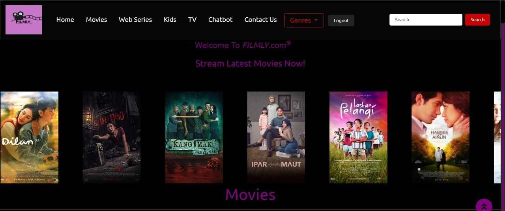

Featured project
Lihat studi kasus ›
Filmly movie platform
Website streaming dan rekomendasi film dengan chatbot interaktif untuk membantu pengguna menemukan tontonan yang sesuai.
- HTML
- CSS
- JavaScript
- Chatbot